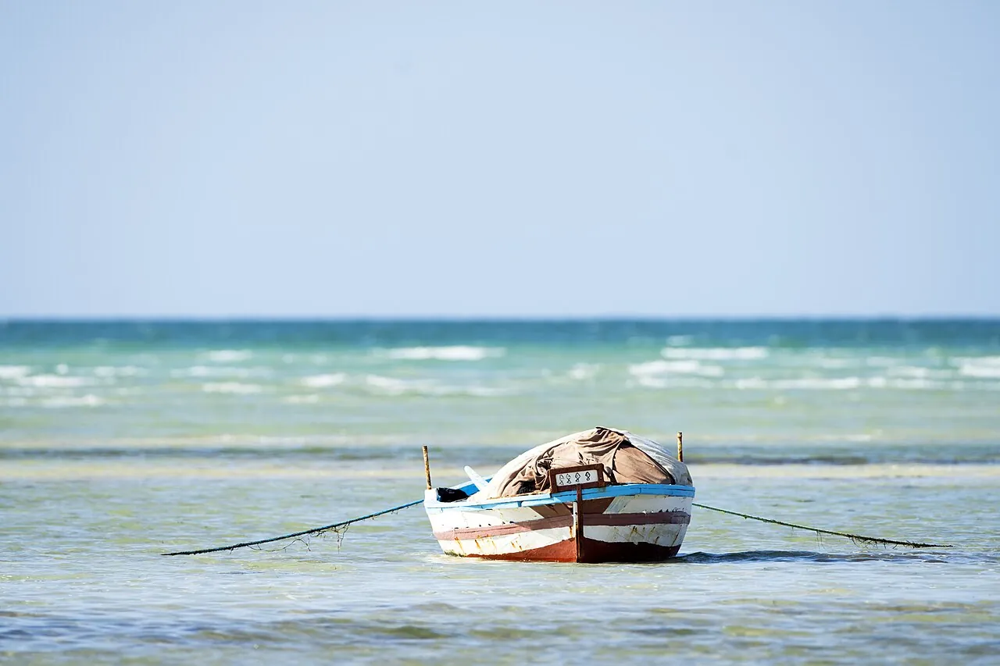

Djerba
Médenine, Tunisie · kitesurf, windsurf, baignade

Île aux eaux peu profondes et au vent régulier, avec de grandes lagunes au sud-est. Un bon terrain d’apprentissage en Méditerranée.
- Lieu
- Médenine, Tunisie
- Niveau
- Débutant
- Activités
- kitesurf, windsurf, baignade
- Type d'eau
- Mer / océan
- Coordonnées
- 33.82, 10.98 (position approximative du secteur)
Dangers à connaître
- Vent thermique l’après-midi.
- Méduses certaines années.
Le conseil d'Ocean Buddy
Navigue dans les zones dédiées, loin des hôtels et des baigneurs.
Ouvrir dans Ocean Buddy Télécharger sur l'App Store
Source : Fiche Ocean Buddy · septembre 2026 · à vérifier localement.